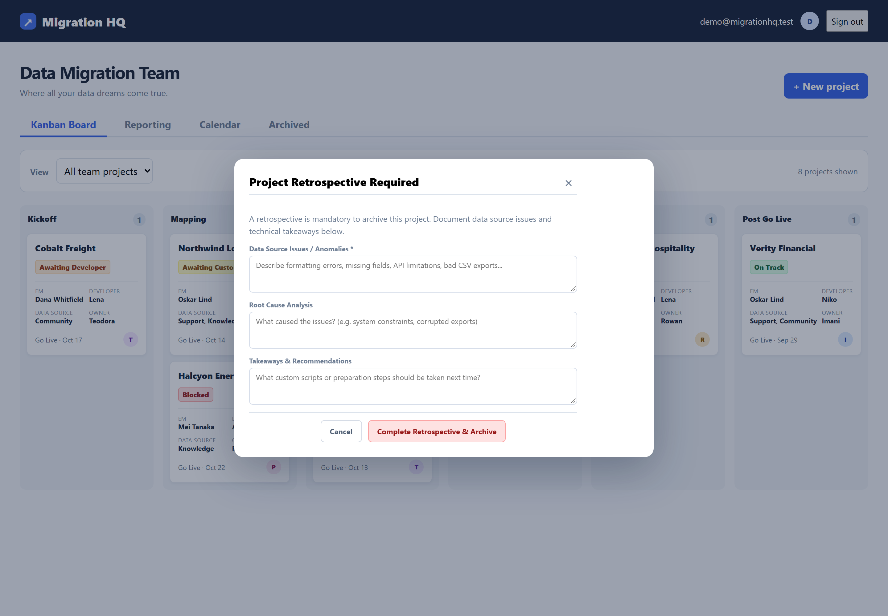

Example web app
Migration HQ
My team tried several project management tools, but none of them fit how a data migration actually runs. So I built one for the team and everyone tracks and runs their projects on it now.
Every migration project has its own card moving through six phases, each with an owner and the data points that matter.


